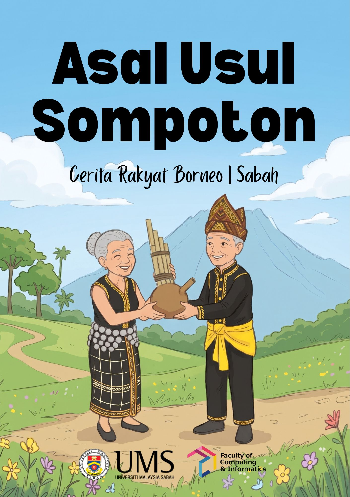

Hidupkan lagenda cinta sejati Aki dan Odu dari kaki Gunung Kinabalu. Imbas halaman buku menggunakan telefon pintar untuk meneroka diorama 3D isometrik, penceritaan 3 bahasa, sari kata langsung, dan alunan asli Sompoton tanpa aplikasi.
"Pada zaman dahulu di Sabah, tinggal sepasang suami isteri warga emas yang penyayang bernama Aki dan Odu..."
Buka Cerita ›
Putar dan teroka ketiga-tiga diorama 3D utama daripada buku cerita ini secara langsung di skrin anda.
Diorama sungai berbatu di tengah hutan tempat Aki dan Odu membantu anak rusa dan burung kecil.
Teroka Skrin Penuh ›Terowong buluh bercahaya yang menjadi laluan burung magis membimbing Aki dan Odu.
Teroka Skrin Penuh ›Detik kemuncak di beranda rumah tradisi apabila alunan Sompoton memulihkan suara Odu.
Teroka Skrin Penuh ›Sompoton diperbuat daripada buah labu kering dan susunan paip buluh (sumbiling). Ketik mana-mana paip atau tekan Auto-Main untuk mendengar alunan tradisional bersama gelombang bunyi.
Di sebuah kampung di Sabah, Aki bertekad mencari penawar untuk memulihkan suara isterinya, Odu, yang hilang akibat demam panas. Kebaikan mereka menolong anak rusa dan burung kecil di sungai tersekat dibalas dengan petunjuk ke rimbunan buluh magis yang mengalunkan melodi menenangkan.
Terinspirasi daripada bunyi tiupan angin pada buluh, Aki dan Odu menggabungkan kepakaran mereka membina alat muzik menggunakan labu kering, paip buluh, rotan, dan lilin lebah sehingga terhasilnya Sompoton. Alunan ajaibnya memulihkan suara Odu dan kekal sebagai simbol cinta sejati serta warisan budaya Borneo.
Pasangan warga emas Kadazandusun yang melambangkan kasih sayang dan kerjasama. Aki mengenakan sigar serta baju tradisi hitam bersulam emas, manakala Odu memakai baju tradisi bersama tali pinggang syiling perak (himpogot).
Ketik mana-mana kad untuk membalikkannya secara 3D dan pelajari kosa kata warisan daripada cerita ini.
Dengar contoh penceritaan 3 bahasa dengan Smart SFX, atau tapis 12 babak cerita di bawah.
Penceritaan lengkap 12 halaman dalam Bahasa Melayu yang mudah difahami kanak-kanak.
Full 12-page English narration bringing Sabahan folklore to international readers.
Jawab 4 soalan ringkas dan muat turun Sijil Digital rasmi Duta Muda Sompoton dengan nama anda.